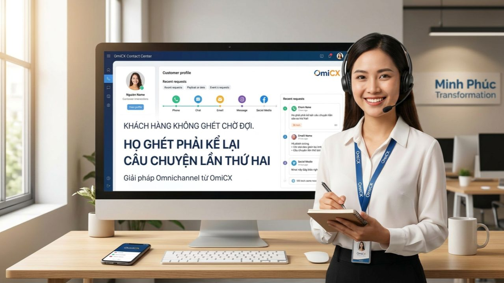
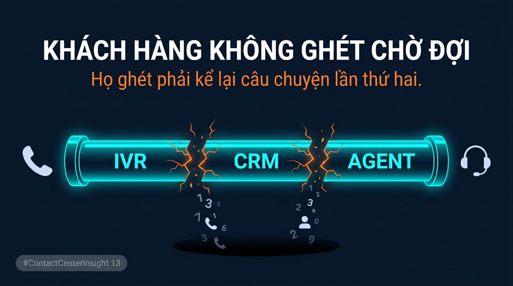
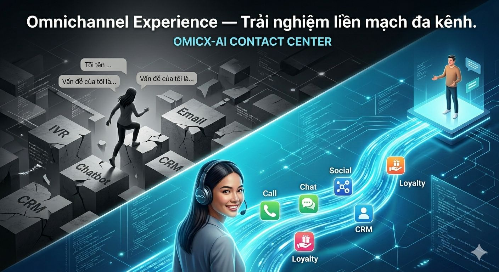

Trang chủ › Blog › Contact Center Insights · Mùa 1
CRM, Omnichannel và trải nghiệm
Vì sao khách hàng ghét phải lặp lại thông tin?

Bạn đã từng trải qua cảnh này chưa? — có thể bạn đã từng là nhân vật chính trong đó.
Bạn gọi hotline ngân hàng. Nhập số CMND trên IVR. Chọn phím 1, phím 2, phím 3.
Chờ. Chờ. Chờ.
Agent nhấc máy. Giọng thân thiện:
"Dạ, anh/chị vui lòng cung cấp lại số CMND giúp em ạ."
Bạn dừng lại một giây.
"Tôi... vừa nhập xong trên máy rồi mà?"
"Dạ hệ thống bên em không hiển thị ạ, anh/chị thông cảm."
Tại khoảnh khắc đó, sự kiên nhẫn – dù là vị khách dễ tính nhất – cũng bắt đầu "tụt dốc". Đây không phải lỗi của Agent. Đây là lỗi của một hệ thống vận hành đang bị "đứt gãy".
1. "Lỗ hổng" chết người trong hành trình trải nghiệm

Sự bực bội của khách hàng khi phải lặp lại thông tin là bằng chứng cho thấy doanh nghiệp đang quản trị theo kiểu "silo" (ốc đảo thông tin). Đây là "lỗ hổng chết người" đang xảy ra phía sau mỗi cuộc gọi như vậy:
- 📵 IVR thu thập thông tin → nhưng không truyền sang CRM
- 📵 CRM có dữ liệu → nhưng không hiển thị cho agent
- 📵 Agent nhận cuộc gọi → "mù" hoàn toàn về khách hàng
Mỗi kênh đang vận hành như một ốc đảo dữ liệu. Khách hàng di chuyển giữa các kênh — nhưng thông tin của họ thì không đi cùng, nơi mỗi bộ phận chỉ nhìn thấy phần việc của mình, thay vì nhìn vào toàn bộ hành trình của khách hàng.
Và đây là cái giá thực sự — không phải chỉ là 30 giây khó chịu:
- → 72% khách hàng sẽ chuyển sang đối thủ sau 2–3 trải nghiệm tệ
- → 1 khách hàng bực bội chia sẻ trải nghiệm xấu với trung bình 9–15 người khác
- → Chi phí giữ chân 1 khách hàng cũ rẻ hơn 5–7 lần so với tìm 1 khách hàng mới
Bắt khách hàng lặp lại thông tin không chỉ là vấn đề trải nghiệm. Đó là vấn đề kinh doanh — và nó đang âm thầm bào mòn doanh thu mỗi ngày.
2. Omnichannel – Khi dữ liệu là một "dòng chảy"
Giải pháp không phải tuyển thêm agent giỏi hơn. Giải pháp là xây dựng thứ mà ngành Contact Center gọi là:
Omnichannel Experience — Trải nghiệm liền mạch đa kênh.
Ở kì #12 bài trước, tôi đã nói CRM là "bộ não" của Contact Center. Vậy thì Omnichannel chính là "hệ thần kinh" — thứ cho phép thông tin truyền đi khắp cơ thể, không bị đứt gãy ở bất kỳ điểm nào.
Khi hệ thần kinh hoạt động đúng, agent nhấc máy đã biết:
- ✅ Khách hàng vừa nhập gì trên IVR
- ✅ Khách hàng đã chat với bot về vấn đề gì 5 phút trước
- ✅ Khách hàng đang ở bước nào trong hành trình xử lý
Không hỏi lại. Không kể lại. Không chờ thêm. Dữ liệu không đứng yên — dữ liệu phải chảy theo khách hàng.
3. OmiCX – "Nhạc trưởng" điều phối trải nghiệm

Đây là lý do tôi tiếp tục nhắc đến OmiCX của Minh Phúc Transformation trong bài này.
Nếu bài #12 tôi nói về vai trò CRM — thì bài #13 này, OmiCX hiện ra ở một vai trò khác: "Nhạc trưởng" điều phối toàn bộ trải nghiệm đa kênh.
OmiCX được xây dựng để giải quyết đúng bài toán đứt gãy này:
- → Hợp nhất realtime: Cuộc gọi, chat, email, Zalo, mạng xã hội — tất cả về một màn hình duy nhất
- → Seamless Handover: Dữ liệu từ IVR truyền thẳng sang agent ngay khi kết nối — không rơi rụng một thông tin nào
- → Agent Assist AI: Gợi ý phản hồi dựa trên toàn bộ context — không chỉ cuộc gọi hiện tại mà cả lịch sử mọi kênh
- → Cá nhân hóa mọi điểm chạm: Dù khách hàng chọn kênh nào, trải nghiệm vẫn nhất quán như một
Kết quả: khách hàng cảm thấy được nhớ đến — dù đây là lần đầu hay lần thứ mười họ liên hệ.
Lòng trung thành không đến từ việc bạn trả lời nhanh bao nhiêu giây.
Nó đến từ việc khách hàng không phải nỗ lực — không phải lặp lại, không phải giải thích lại, không phải bắt đầu lại từ đầu.
Omnichannel không phải xu hướng của tương lai. Nó là kỳ vọng tối thiểu của khách hàng ngày hôm nay.
Doanh nghiệp nào còn để khách hàng phải kể lại câu chuyện lần thứ hai — đang dần mất đi thứ khó lấy lại nhất: sự tin tưởng.
- 👉 Góc thảo luận: Tại Contact Center của bạn, khách hàng phải "kể lại" thông tin ở bước nào nhiều nhất?
- 🔄 Từ IVR sang Agent.
- 🔄 Từ Agent này sang Agent khác khi chuyển máy.
- 🔄 Từ kênh Chat sang kênh Gọi điện.
Hãy comment xuống bên dưới, tôi đang tổng hợp các "pain point" này để tìm giải pháp tối ưu nhất!